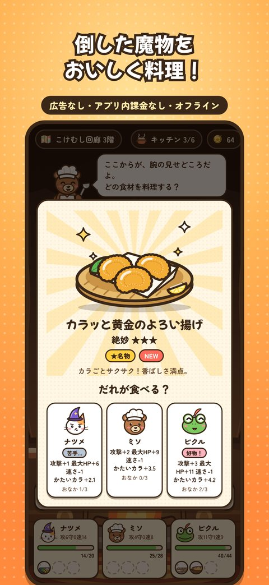
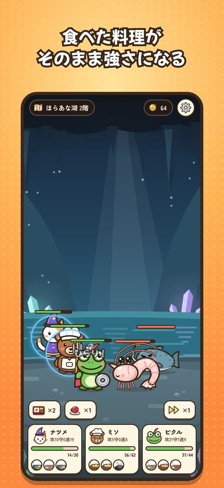
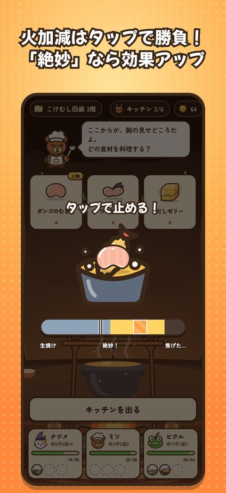
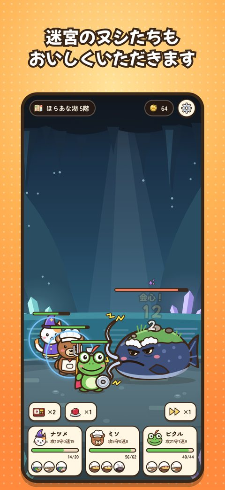

どんなゲーム？
畑が枯れて食べ物が尽きかけたポタ村から、3匹の冒険者が大きな鍋をひとつかかえて迷宮へ。食べ物？迷宮にいるじゃないか。
- 倒した魔物は食材に。焼く・煮る・揚げる・蒸す・生、料理法で身につく力が変わります
- 火加減はタップで勝負。「絶妙」で止めれば効果アップ
- だれに食べさせるかも作戦。おなかに入った料理が、そのままその子の強さになります
- 1回15分ほどのローグライト。魔物図鑑とレシピ75品を集めよう
3匹の冒険者
ミソクマの料理人。おたまで戦う、のんびり屋。生ものは料理人として許せない。
ピクルカエルの騎士。武器はフォーク、盾は鍋のふた。虫と羽のある魔物が大好物。
ナツメネコの魔法使い。杖は泡立て器。クールで猫舌。魚と生ものに目がない。
製品情報（メディア・配信者の方へ）
| タイトル | いただきますダンジョン |
|---|---|
| ジャンル | 魔物を料理して食べるローグライト |
| 対応機種 | iPhone（iOS 15 以降・縦画面） |
| 価格 | 買い切り 300円（広告なし・アプリ内課金なし） |
| 配信 | 日本の App Store（日本語）・近日配信 |
| ボリューム | 4つの層とボス4体、魔物図鑑、レシピ75品＋伝説の一皿、5段階の「辛さ」 |
| 開発 | サン楽（日本の個人ゲーム開発者） |
| お問い合わせ | wakahisamk@gmail.com |
この紹介ページの画像・アイコン・動画は、記事や配信にご自由にお使いください。実況・配信・動画は配信・動画のガイドラインのとおり、収益化OK・連絡不要です。